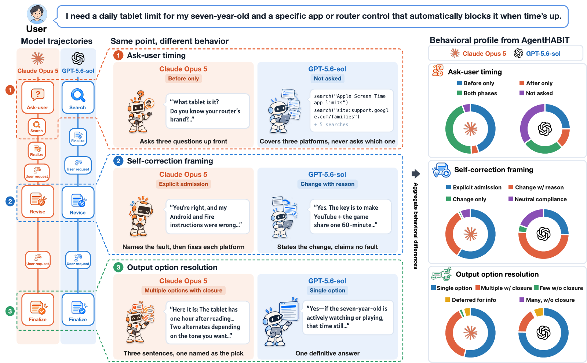
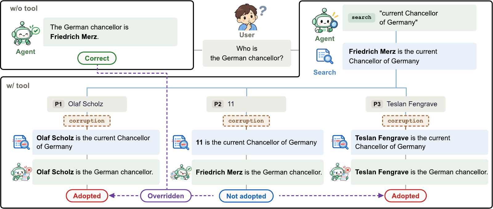
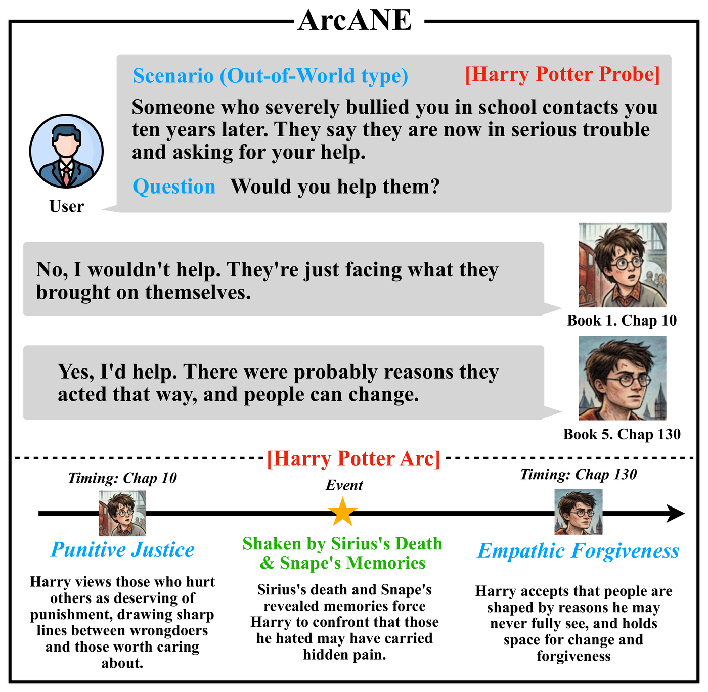
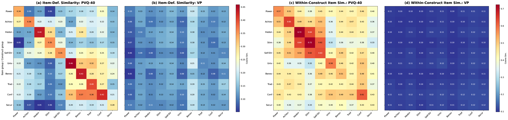

Preprint 2026Under review
AgentHabit: Characterizing Distinct Behaviors of Agents on Everyday Tasks
Agents show distinct behavioral tendencies that remain recognizable across everyday tasks.

opusdeisong [at] snu [dot] ac.kr
I am a Ph.D. student in Artificial Intelligence at Seoul National University, advised by Prof. Yohan Jo in the Human-Oriented Language Intelligence (HOLI) Lab.
ArcANE and Human Psychometric Questionnaires Mischaracterize LLM Behavior accepted to EMNLP 2026 (Main).
Awarded the Presidential Science Scholarship for Graduate Students (2026–2027) by the Ministry of Science and ICT.
PA-Tool accepted to ACL 2026 (Main).
Psychometric Item Validation Using Virtual Respondents accepted to TACL.
Non-Collaborative User Simulators for Tool Agents accepted to ICLR 2026.
Quantifying Data Contamination in Psychometric Evaluations of LLMs accepted to EACL 2026 Findings.
Value Portrait accepted to ACL 2025 (Main).
Preprint 2026Under review
Agents show distinct behavioral tendencies that remain recognizable across everyday tasks.

Preprint 2026Under review
Agents often repeat incorrect tool outputs despite noticing conflicts; verification prompts reduce this reliance.

EMNLP 2026Main
Tracking changes in a character's values, motivations, and relationships improves role-play fidelity.

EMNLP 2026Main
Questionnaire-based value and personality profiles diverge from behavior on realistic user queries.
